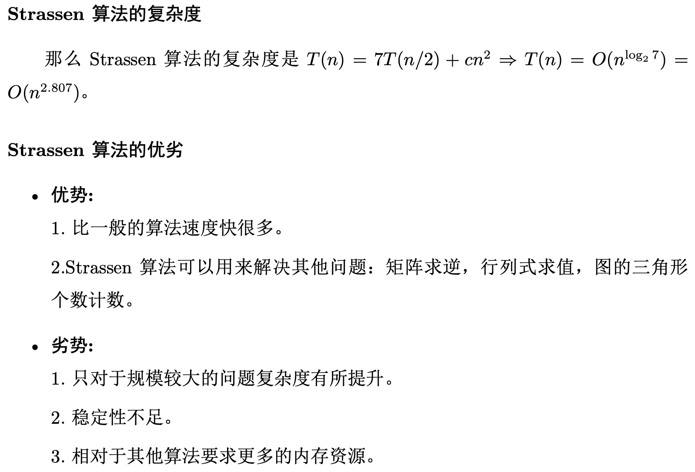
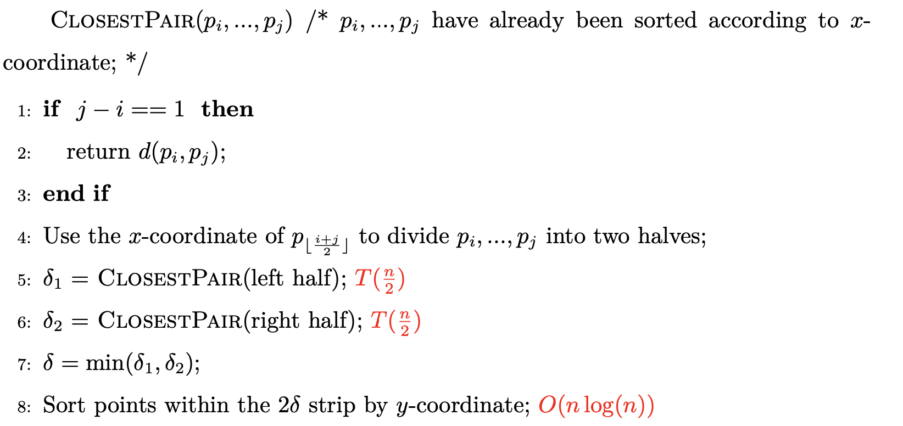
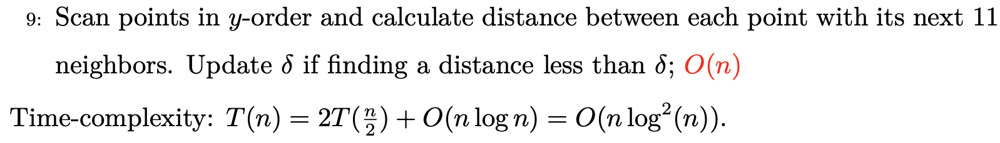
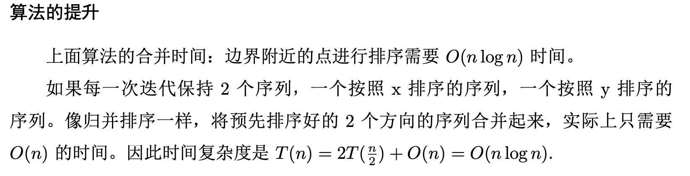

二分查找（逻辑统一） 1 2 3 4 5 6 7 8 9 10 11 12 13 14 15 16 17 18 19 20 21 22 23 24 25 26 27 28 29 30 31 32 33 34 35 36 37 38 39 40 41 42 43 44 45 46 47 48 49 50 51 52 53 54 55 int binary_search (int [] nums, int target) int left = 0 , right = nums.length - 1 ; while (left <= right) { int mid = left + (right - left) / 2 ; if (nums[mid] < target) { left = mid + 1 ; } else if (nums[mid] > target) { right = mid - 1 ; } else if (nums[mid] == target) { return mid; } } return -1 ; } int left_bound (int [] nums, int target) int left = 0 , right = nums.length - 1 ; while (left <= right) { int mid = left + (right - left) / 2 ; if (nums[mid] < target) { left = mid + 1 ; } else if (nums[mid] > target) { right = mid - 1 ; } else if (nums[mid] == target) { right = mid - 1 ; } } if (left >= nums.length || nums[left] != target) return -1 ; return left; } int right_bound (int [] nums, int target) int left = 0 , right = nums.length - 1 ; while (left <= right) { int mid = left + (right - left) / 2 ; if (nums[mid] < target) { left = mid + 1 ; } else if (nums[mid] > target) { right = mid - 1 ; } else if (nums[mid] == target) { left = mid + 1 ; } } if (right < 0 || nums[right] != target) return -1 ; return right; }
例题（旋转数组）每次编码之前都得考虑边界条件，虽然不起眼但很重要！
1 2 3 4 5 6 7 8 9 10 11 12 13 14 15 16 17 18 19 20 21 22 23 24 25 26 27 28 29 30 31 #数组可以分成两段，在每一段中分别进行搜索 class Solution {public : int search (vector<int >& nums, int target) if (nums.size () == 1 ) return nums[0 ]==target?0 :-1 ; if (!nums.size ()) return -1 ; int left = 0 ; int right = nums.size () - 1 ; while (left <= right) { int mid = left + (right-left)/2 ; if (nums[mid] == target) return mid; if (nums[mid]>=nums[0 ]) { if (nums[mid]>target && target>=nums[0 ]) right = mid - 1 ; else left = mid + 1 ; } else { if (nums[mid]<target && target<=nums[right]) left = mid + 1 ; else right = mid - 1 ; } } return -1 ; } };
最小公倍数，最大公因数 1 2 3 4 5 6 int gcd (int a, int b) return b == 0 ? a : gcd (b, a% b);} int lcm (int a, int b) return a * b / gcd (a, b);}
筛法求质数 1 2 3 4 5 6 7 8 9 10 11 12 13 14 15 16 17 18 19 20 21 class Solution {public : int countPrimes (int n) int res=n-2 ; if (n==0 ||n==1 ) return 0 ; vector<bool > dp (n+1 ,true ) ; for (int i=2 ;i<n;i++){ if (dp[i]){ for (int j=2 *i;j<n;j+=i){ if (dp[j]){ dp[j]=false ; res--; } } } } return res; } };
进制转换 负数先转化为正数，再进行进制转化。
阶乘尾部0的个数 每个尾部的 0 由 2 × 5 = 10 而来，因此我们可以把阶乘的每一个元素拆成质数相乘，统计有
1 2 3 int trailingZeroes (int n) return n == 0 ? 0 : n / 5 + trailingZeroes (n / 5 );}
fmod（x,y） 1 2 3 bool isPowerOfThree (int n) return fmod (log10 (n) / log10 (3 ), 1 ) == 0 ;}
随机取样算法 1 2 3 4 5 6 7 8 9 10 11 12 13 14 15 16 17 18 19 20 21 class Solution {public : vector<int > origin; Solution (vector<int >& nums):origin (std::move (nums)) { } vector<int > reset () { return origin; } vector<int > shuffle () { vector<int > shuffled (origin) ; if (origin.empty ()) return origin; for (int i=origin.size ()-1 ;i>=0 ;i--){ swap (shuffled[i],shuffled[rand ()%(i+1 )]); } return shuffled; } };
其中：
1 2 3 4 5 6 7 8 9 10 11 12 13 14 15 16 17 18 19 20 21 22 23 24 25 26 27 28 29 30 31 32 33 34 35 36 37 38 39 40 41 42 43 44 class Student {public : int m_age; int m_score; Student () { m_age = 18 ; m_score = 99 ; cout << "1. 无参构造函数" << endl; } }; class Student {public : int m_age; int m_score; Student (int age, int score) : m_age (age), m_score (score) {} Student (int age, int score) { m_age = age; m_score = score; } }; class Student {public : int m_age; int m_score; Student (Student& s) { m_age = s.m_age; m_score = s.m_score; cout << "3. 复制构造函数" << endl; } };
2.std::move()
按权重进行随机 1 2 3 4 5 6 7 8 9 10 11 class Solution {public : vector<int > wei; Solution (vector<int >& w):wei (w) { partial_sum (wei.begin (),wei.end (),wei.begin ()); } int pickIndex () return lower_bound (wei.begin (),wei.end (),rand ()%(wei.back ())+1 )-wei.begin (); } };
主要用到一个前缀和函数partial_sum（）和lower_bound()函数求一个不小于的下标。
水库算法进行随机 在面对一个不知道具体长度的随机问题时，可以使用水库算法：
1 2 3 4 5 6 7 8 9 10 11 12 13 14 15 16 17 18 19 20 class Solution {public : ListNode* head_; Solution (ListNode* head):head_ (head) { } int getRandom () int res=head_->val; ListNode*tem=head_->next; int index=2 ; while (tem){ if (rand ()%index==0 ) res=tem->val; index++; tem=tem->next; } return res; } };
核心思想就是每个元素都以1/n的概率被随机到，证明是当前元素被选中并且之后的元素都没有被选中。
string()类初始化 1 2 3 4 5 6 7 8 9 10 11 12 13 14 class Solution {public : string convertToTitle (int columnNumber) { string s="" ; int a=columnNumber; while (a>0 ){ char b=(a-1 )%26 +1 ; string tem (1 ,b-1 +'A' ) ; s=tem+s; a=(a-b)/26 ; } return s; } };
对于字符转换为字符串的问题，可以使用string(a,b)类，等价于一个有a个b的字符串。
leetcode 快乐数 1 2 3 4 5 6 7 8 9 编写一个算法来判断一个数 n 是不是快乐数。 「快乐数」定义为： 对于一个正整数，每一次将该数替换为它每个位置上的数字的平方和。 然后重复这个过程直到这个数变为 1，也可能是 无限循环 但始终变不到 1。 如果 可以变为 1，那么这个数就是快乐数。 如果 n 是快乐数就返回 true ；不是，则返回 false 。
对于这一类型的题目需要先进行枚举找出数列的规律，找出规律之后再进行求解。一般都是呈现两条或三条规律。
最小移动和 1 2 3 4 给定一个非空整数数组，找到使所有数组元素相等 所需的最小移动数，其中每次移动可将选定的 一个元素加1或减1。 您可以假设数组的长度最多为10000。
可以通过证明得出中位数是最佳选择。
通过一个随机函数获得另一个随机函数 最基本的做法就是枚举出所有的可能性然后进行分析。
位运算 1 2 n&(n-1)可以去除n的最低位上的1 n&(-n)可以得到最低位上的1
巧妙运用：
1 2 3 4 给定一个整数数组，这个数组里 只有一个数次出现了一次， 其余数字出现了两次，求这个只 出现一次的数字。
利用异或的性质。
两个栈实现一个队列（面试真题） 1 2 3 4 5 6 7 8 9 10 11 12 13 14 15 16 17 18 19 20 21 22 23 24 25 26 27 28 29 30 31 32 33 34 35 36 37 38 39 40 class MyQueue {public : stack<int > a; stack<int > b; MyQueue () { } void push (int x) while (!a.empty ()){ b.push (a.top ()); a.pop (); } b.push (x); } int pop () while (!b.empty ()){ a.push (b.top ()); b.pop (); } int x=a.top (); a.pop (); return x; } int peek () while (!b.empty ()){ a.push (b.top ()); b.pop (); } return a.top (); } bool empty () if (a.empty ()&&b.empty ()) return true ; else return false ; } };
优先队列 1 2 优先队列是在堆的基础上建立的，可以实现O(1)时间复杂度取出最大值， 在O(logn)时间复杂度插入任意值。
以下是关于堆的建立与操作：
1 2 3 4 5 6 7 8 9 10 11 12 13 14 15 16 17 18 19 20 21 22 23 24 25 26 27 28 29 30 31 32 33 34 35 36 37 38 39 40 41 42 43 44 45 class Heap { public : vector<int > heap; int top () if (!heap.empty ()) return heap[0 ]; else return -1 ; } void insert (int x) heap.push_back (x); swim (heap.size ()-1 ); } void delete_top () heap[0 ]=heap[heap.size ()-1 ]; heap.pop_back (); sink (0 ); } bool empty_ () if (heap.empty ()) return true ; else return false ; } void swim (int index) while (index/2 >=0 &&heap[index/2 ]<heap[index]){ swap (heap[index/2 ],heap[index]); index=index/2 ; } } void sink (int index) while (2 *index<=heap.size ()-1 ){ int tem_index=index*2 ; if ((tem_index+1 )<=(heap.size ()-1 )&&heap[tem_index+1 ]>heap[tem_index]) tem_index++; if (heap[index]<heap[tem_index]){ swap (heap[index],heap[tem_index]); index=tem_index; } else break ; } } };
1 2 3 例题： 给你一个链表数组，每个链表都已经按升序排列。 请你将所有链表合并到一个升序链表中，返回合并后的链表。
此题可以引入优先队列，优先队列的方法如下：
1 2 3 4 5 6 7 8 9 10 11 12 13 14 priority_queue<int , vector<int >, cmp> q; 自定义优先级： struct cmp { operator bool () (int x, int y) { return x > y; } }; empty () 如果队列为空，则返回真pop () 删除对顶元素，删除第一个元素push () 加入一个元素size () 返回优先队列中拥有的元素个数top () 返回优先队列对顶元素，返回优先队列中有最高优先级的元素
可以不断地维护优先队列，每次取出队首元素即为最小值，依次加入结果向量中即为最终结果。
1 2 3 4 5 6 7 8 9 10 11 12 13 14 15 16 17 18 19 20 21 22 23 24 25 26 27 class Solution {public : struct cmp { bool operator () (ListNode*a,ListNode*b) return a->val>b->val; } }; ListNode* mergeKLists (vector<ListNode*>& lists) { if (lists.empty ()) return nullptr ; priority_queue<ListNode*,vector<ListNode*>,cmp> q; for (ListNode* list:lists) if (list) q.push (list); ListNode* res=new ListNode (0 ); ListNode* tem=res; while (!q.empty ()){ res->next=q.top (); res=res->next; q.pop (); if (res->next) q.push (res->next); } return tem->next; } };
双端队列 1 2 3 4 5 6 STL中的栈和队列都是以双端队列为基础建立的。 双端队列可以实现两端进出元素。 例题： 给你一个整数数组 nums，有一个大小为 k 的滑动窗口从数组的最左侧移动到数组的最右侧。 你只可以看到在滑动窗口内的 k 个数字。滑动窗口每次只向右移动一位。 返回滑动窗口中的最大值。
此题中可以通过滑动窗口这个要素来联想到双端队列，此处通过维护一个双端队列来保存每一阶段的最大值，每次清除掉最右端的小值，最左端的即为最大值。
1 2 3 4 5 6 7 8 9 10 11 12 13 14 15 16 17 class Solution {public : vector<int > maxSlidingWindow (vector<int >& nums, int k) { deque<int > dp; vector<int > res; for (int i=0 ;i<nums.size ();i++){ if (!dp.empty ()&&dp.front ()<=(i-k)) dp.pop_front (); while (!dp.empty ()&&nums[dp.back ()]<nums[i]) dp.pop_back (); dp.push_back (i); if (i>=k-1 ) res.push_back (nums[dp.front ()]); } return res; } };
hash_map 1 2 3 给定一个整数数组 nums 和一个整数目标值 target，请你在该数组中找出 和为目标值 target 的那 两个 整数，并返回它们的数组下标。 你可以假设每种输入只会对应一个答案。但是，数组中同一个元素在答案里不能重复出现。 你可以按任意顺序返回答案。
题目不难，主要是用到hash_map进行优化，写之后发现hash_map不能存放key一样的元素，即使val不一样也不能存。
前缀和与积分图 1 2 3 一维的前缀和，二维的积分图，都是把每个位置之前的一维线段或二维矩形预先存储，方便 加速计算。如果需要对前缀和或积分图的值做寻址，则要存在哈希表里；如果要对每个位置记录 前缀和或积分图的值，则可以储存到一维或二维数组里，也常常伴随着动态规划。
1 2 比较重要的一点是一个内置的求前缀和的函数：partial_sum(a.begin(),a.end(),b.begin()); 作用是将a的前缀和存入b中。
一个很巧妙的结合散列表和前缀和的例题：
1 给你一个整数数组 nums 和一个整数 k ，请你统计并返回该数组中和为 k 的连续子数组的个数。
1 2 3 4 5 6 7 8 9 10 11 12 13 14 class Solution {public : int subarraySum (vector<int >& nums, int k) unordered_map<int ,int > mp; mp[0 ]=1 ; int tem=0 ;int res=0 ; for (int i:nums){ tem+=i; res+=mp[tem-k]; mp[tem]++; } return res; } };
1 散列表的恰当使用将会对时间复杂度和题目的顺利解决产生极大的效果。
用空间换时间的完美例题 1 2 3 4 5 超级丑数 是一个正整数，并满足其所有质因数都出现在质数数组 primes 中。 给你一个整数 n 和一个整数数组 primes ，返回第 n 个 超级丑数 。 题目数据保证第 n 个 超级丑数 在 32-bit 带符号整数范围内。
这道题很显然就是可以通过枚举来解决，但由于数量级很大时间复杂度可能很高，有限队列也会出现这样的问题，因此考虑使用动态规划。当前的丑数可以通过对之前的记录的丑数进行排列组合，取最小值即为当前的丑数。新开一个数组记录最近的m个丑数。
1 2 3 4 5 6 7 8 9 10 11 12 13 14 15 16 17 18 19 20 21 22 23 24 25 26 class Solution {public : int nthSuperUglyNumber (int n, vector<int >& primes) vector<long > dp (n+1 ,0 ) ; int m=primes.size (); vector<long > points (m,0 ) ; vector<long > nums (m,1 ) ; for (int i=1 ;i<=n;i++){ long long min_=INT_MAX; for (int j=0 ;j<nums.size ();j++){ if (min_>nums[j]) min_=nums[j]; } dp[i]=min_; for (int j=0 ;j<nums.size ();j++){ if (nums[j]==min_){ points[j]++; nums[j]=dp[points[j]]*primes[j]; } } } return dp[n]; } };
优势洗牌 1 2 3 给定两个大小相等的数组 A 和 B，A 相对于 B 的优势可以用满足 A[i] > B[i] 的索引 i 的数目来描述。 返回 A 的任意排列，使其相对于 B 的优势最大化。
基本思路能够想到，就是对数组进行排序，当前元素不满足条件就往下走，可以实现元素价值利用最大化。主要有一点就是相同元素怎么处理，可以通过设置一个整数到数组的映射表，将满足条件的所有值都存储下来。
1 2 3 4 5 6 7 8 9 10 11 12 13 14 15 16 17 18 19 20 21 22 23 24 25 26 27 28 29 30 31 32 33 34 35 36 class Solution {public : vector<int > advantageCount (vector<int >& nums1, vector<int >& nums2) { vector<int > res (nums1.size(),0 ) ; vector<int > remaining; map<int ,queue<int >> mp; vector<int > nums2_; for (int i:nums2) nums2_.push_back (i); sort (nums2_.begin (),nums2_.end ()); sort (nums1.begin (),nums1.end ()); int j=0 ; for (int i:nums1){ if (i>nums2_[j]){ mp[nums2_[j]].push (i); j++; } else { remaining.push_back (i); } } map<int ,queue<int >>::iterator it; for (int i=0 ;i<nums2.size ();i++){ it=mp.find (nums2[i]); if (it!=mp.end ()&&!it->second.empty ()){ res[i]=it->second.front (); it->second.pop (); } else { res[i]=remaining[remaining.size ()-1 ]; remaining.pop_back (); } } return res; } };
线段树 1 2 线段树能把一些对于区间（或者线段）的修改、维护，从O(N)的时间复杂度变成O（logN），对于频繁性的查询可以大大减小时间复杂度。 通过分段引入树的结构大大减小数据的相关性，从而进一步减少区间修改查询的时间复杂度。
线段树详解
KMP 目前看到了两种解法，其中一种是经典解法，另外一种很简单：
1 2 3 4 无论是经典解法还是动态规划主要思想都是： （1）先建立一个记录下一次状态转移的位置的矩阵或向量 （2）根据状态转移向量或矩阵进行匹配
1 2 3 4 5 6 7 8 9 10 11 12 13 14 15 16 17 18 19 20 21 22 23 24 25 26 27 28 29 30 31 32 33 34 35 36 37 38 39 40 41 42 43 44 45 46 47 48 49 50 51 52 53 54 55 56 57 58 59 60 61 62 63 64 65 66 67 68 69 70 71 72 73 74 class Solution {public : int strStr (string haystack, string needle) int n = haystack.size (), m = needle.size (); if (m == 0 ) { return 0 ; } vector<int > pi (m) ; for (int i = 1 , j = 0 ; i < m; i++) { while (j > 0 && needle[i] != needle[j]) { j = pi[j - 1 ]; } if (needle[i] == needle[j]) { j++; } pi[i] = j; } for (int i = 0 , j = 0 ; i < n; i++) { while (j > 0 && haystack[i] != needle[j]) { j = pi[j - 1 ]; } if (haystack[i] == needle[j]) { j++; } if (j == m) { return i - m + 1 ; } } return -1 ; } };
例：最长回文串
1 2 3 4 5 6 7 8 9 10 11 12 13 14 15 16 17 class Solution {public : int longestPalindrome (string s) unordered_map<char , int > count; int ans = 0 ; for (char c : s) ++count[c]; for (auto p : count) { int v = p.second; ans += v / 2 * 2 ; if (v % 2 == 1 and ans % 2 == 0 ) ++ans; } return ans; } };
最长回文子串：
1 2 3 4 需要注意的点： 1.遍历的时候以长度遍历，可以覆盖到所有的点。 2.针对判断中多个条件的最好是拆分条件套层判断。 3.O（n）算法马拉车暂时还没搞懂。
1 2 3 4 5 6 7 8 9 10 11 12 13 14 15 16 17 18 19 20 21 22 23 24 25 26 27 28 29 30 31 32 33 34 35 36 37 38 39 40 41 42 43 44 45 46 47 48 class Solution { public : vector<vector<int >> dp; string longestPalindrome (string s) { if (s.size () < 2 ) return s; dp.resize (s.size () + 1 , vector <int >(s.size () + 1 , 0 )); string res = "" ; int len = 1 ; int res_index = 0 ; for (int i = 0 ; i < s.size (); i++) dp[i][i] = 1 ; for (int len_ = 2 ; len_ <= s.size (); len_++) { for (int index = 0 ; index < s.size (); index++) { int tem_right = len_ + index - 1 ; if (tem_right >= s.size ()) break ; if (s[index] != s[tem_right]) dp[index][tem_right] = 0 ; else { if (tem_right - index < 3 ) dp[index][tem_right] = 1 ; else { dp[index][tem_right] = dp[index + 1 ][tem_right - 1 ]; } } if (len_ > len && dp[index][tem_right]) { len = len_; res_index = index; } } } return s.substr (res_index, len); } };
反转链表
1 2 反转链表是面试中最长考的一道题，必须要牢牢记住。 实现要点就是头插法，一个尾指针从链表尾部出发不断向前走，头指针不断往后走，走完尾指针就变成头指针。
1 2 3 4 5 6 7 8 9 10 11 12 13 class Solution {public : ListNode* reverseList (ListNode* head) { ListNode *pre=nullptr , *tem; while (head){ tem=head->next; head->next=pre; pre=head; head=tem; } return pre; } };
股票交易 （基）
1 2 3 4 5 6 7 8 9 10 11 12 13 14 15 class Solution {public : int maxProfit (vector<int >& prices) int res = 0 ; int preMin = prices[0 ]; for (int i=0 ; i<prices.size (); i++) { if (prices[i]-preMin > res) res = prices[i]-preMin; if (prices[i] < preMin) { preMin = prices[i]; } } return res; } };
快慢指针 环形链表判断（基）
1 2 3 4 5 6 7 8 9 10 11 12 13 14 15 16 17 18 class Solution {public : bool hasCycle (ListNode *head) if (!head || !head->next) return false ; ListNode *first = head->next->next; ListNode *second = head->next; while (first && first->next && first != second) { first = first->next->next; second = second->next; } if (!first || !first->next) return false ; else return true ; } };
环形链表判断（Ⅱ）
1 2 3 4 5 6 7 8 9 10 11 12 13 14 15 16 17 18 19 20 21 22 23 24 class Solution {public : ListNode *detectCycle (ListNode *head) { if (!head || !head->next) return NULL ; ListNode *firstNode = head->next->next; ListNode *secondNode = head->next; while (firstNode && firstNode->next && firstNode!=secondNode) { firstNode = firstNode->next->next; secondNode = secondNode->next; } if (firstNode && firstNode->next) { firstNode = head; while (firstNode != secondNode) { firstNode = firstNode->next; secondNode = secondNode->next; } return firstNode; } else { return NULL ; } } };
二叉树的锯齿形层序遍历 第一次做想套用层序遍历的方法，记录一下每一层的遍历顺序，后来发现有点麻烦。实际动手做发现用两个栈来实现更方便，不同顺序遍历对应了两个不同的栈。
1 2 3 4 5 6 7 8 9 10 11 12 13 14 15 16 17 18 19 20 21 22 23 24 25 26 27 28 29 30 31 32 33 34 35 36 37 38 39 40 41 42 43 44 45 46 47 class Solution {public : vector<vector<int >> zigzagLevelOrder (TreeNode* root) { stack<TreeNode*> q1; stack<TreeNode*> q2; q1.push (root); vector<vector<int >> res; vector<int > newLine; if (!root) return res; int nextNum = 0 ; int flag = 0 ; while (!q1.empty () || !q2.empty ()) { TreeNode* tem; if (flag==0 ) { while (!q1.empty ()) { tem = q1.top (); q1.pop (); newLine.push_back (tem->val); if (tem->left) { q2.push (tem->left); } if (tem->right) q2.push (tem->right); } flag = 1 ; res.push_back (newLine); newLine.clear (); } else { while (!q2.empty ()) { tem = q2.top (); q2.pop (); newLine.push_back (tem->val); if (tem->right) q1.push (tem->right); if (tem->left) q1.push (tem->left); } flag = 0 ; res.push_back (newLine); newLine.clear (); } } return res; } };
LRU 1 2 3 4 5 6 list的splice用法 splice(position, list2): 将list2中的所有元素剪贴到list1的position位置； splice(position, list2, iter): 将list2中某个位置的迭代器iter指向的元素剪贴到list1中的position位置； splice(position, list2, iter1, iter2): 将list2中的某一段位置iter1 ~ iter2的元素剪贴到list1中的position位置 list通过back()索引到最后一个值
面试高频题
1 2 3 4 5 6 7 8 9 10 11 12 13 14 15 16 17 18 19 20 21 22 23 24 25 26 27 28 29 30 31 32 33 34 35 class LRUCache { list<pair<int , int >> cache; unordered_map<int , list<pair<int , int >>::iterator> mp; int cacheSize; public : LRUCache (int capacity):cacheSize (capacity) {} int get (int key) { auto it = mp.find (key); if (it == mp.end ()) { return -1 ; } cache.splice (cache.begin (), cache, it->second); return it->second->second; } void put (int key, int value) { auto it = mp.find (key); if (it != mp.end ()) { cache.splice (cache.begin (), cache, it->second); it->second->second = value; return ; } cache.insert (cache.begin (), make_pair (key, value)); mp[key] = cache.begin (); if (cache.size () > cacheSize) { mp.erase (cache.back ().first); cache.pop_back (); } return ; } };
第K大的数 1 2 3 4 5 6 7 8 9 10 11 12 13 14 15 16 17 18 19 20 21 22 23 class Solution {public : int findKthLargest (vector<int >& nums, int k) map<int , int > mp; for (auto i: nums) { auto it = mp.find (i); if (it == mp.end ()) mp[i] = 1 ; else mp[i]++; } int cnt = 0 ; auto it = mp.end (); it--; for (it; it!=mp.begin (); it--) { cnt += it->second; if (cnt >= k) break ; } return it->first; } };
k个一组翻转链表 给你链表的头节点 head ，每 k 个节点一组进行翻转，请你返回修改后的链表。
k 是一个正整数，它的值小于或等于链表的长度。如果节点总数不是 k 的整数倍，那么请将最后剩余的节点保持原有顺序。
你不能只是单纯的改变节点内部的值，而是需要实际进行节点交换。
1 2 3 4 5 6 7 8 9 10 11 12 13 14 15 16 17 18 19 20 21 22 23 24 25 26 27 28 29 30 class Solution { public : ListNode *reverseKGroup (ListNode *head, int k) { ListNode *res = NULL ; ListNode *tem = head; ListNode *preHead = head; int cnt = k; while (cnt-- && tem) { ListNode* newNode = new ListNode (); newNode->val = tem->val; newNode->next = res; if (cnt == (k-1 )) { preHead = newNode; } res = newNode; tem = tem->next; } if (tem) { preHead->next = reverseKGroup (tem, k); } else if (!tem && cnt != -1 ) return head; return res; } };
指定起始和终止结点进行反转链表 给你单链表的头指针 head 和两个整数 left 和 right ，其中 left <= right 。请你反转从位置 left 到位置 right 的链表节点，返回 反转后的链表 。
1 这类型有一个通用的策略就是设置一个虚拟头结点，可以解决头结点的计算问题。
1 2 3 4 5 6 7 8 9 10 11 12 13 14 15 16 17 18 19 20 21 class Solution {public : ListNode *reverseBetween (ListNode *head, int left, int right) { ListNode *dummyNode = new ListNode (-1 ); dummyNode->next = head; ListNode *pre = dummyNode; for (int i = 0 ; i < left - 1 ; i++) { pre = pre->next; } ListNode *cur = pre->next; ListNode *next; for (int i = 0 ; i < right - left; i++) { next = cur->next; cur->next = next->next; next->next = pre->next; pre->next = next; } return dummyNode->next; } };
三数之和 1 2 3 4 5 6 7 8 9 10 11 12 13 14 15 16 17 18 19 20 21 22 23 24 25 26 27 28 29 class Solution {public : vector<vector<int >> threeSum (vector<int >& nums) { int n = nums.size (); sort (nums.begin (), nums.end ()); vector<vector<int >> res; for (int first = 0 ; first < n; first++) { if (first > 0 && nums[first] == nums[first-1 ]) continue ; int target = -nums[first]; int third = n - 1 ; for (int second = (first + 1 ); second < n; second++) { if (second > (first + 1 ) && nums[second] == nums[second - 1 ]) continue ; while (second < third && (nums[second] + nums[third]) > target) third--; if (second == third) break ; if ((nums[second] + nums[third]) == target) res.push_back ({nums[first], nums[second], nums[third]}); } } return res; } };
快速排序（快速版） 1 2 3 4 5 6 7 8 9 10 11 12 13 14 15 16 17 18 19 20 21 22 23 24 25 26 27 28 29 30 31 32 33 34 35 36 37 class Solution {public : int partition (vector<int >& nums, int l, int r) int tem = nums[r]; int i = l-1 ; for (int j = l; j <= r-1 ; j++) { if (nums[j] <= tem) { i++; swap (nums[i], nums[j]); } } swap (nums[i+1 ], nums[r]); return i+1 ; } int random_partition (vector<int >& nums, int l, int r) int i = rand () % (r-l+1 ) + l; swap (nums[r], nums[i]); return partition (nums, l, r); } void random_quicksort (vector<int >& nums, int l, int r) if (l < r) { int pos = random_partition (nums, l, r); random_quicksort (nums, l, pos-1 ); random_quicksort (nums, pos+1 , r); } } vector<int > sortArray (vector<int >& nums) { srand ((unsigned )time (NULL )); random_quicksort (nums, 0 , nums.size ()-1 ); return nums; } };
二叉树的最近祖先 1 2 3 4 5 6 7 8 9 10 11 12 13 14 15 16 17 18 19 20 21 22 23 24 class Solution {public : TreeNode* ans; bool dfs (TreeNode* root, TreeNode* p, TreeNode* q) if (root == nullptr ) return false ; bool lson = dfs (root->left, p, q); bool rson = dfs (root->right, p, q); cout << root->val << " " << lson << " " << rson << endl; if ((lson && rson) || ((root->val == p->val || root->val == q->val) && (lson || rson))) { ans = root; } return lson || rson || (root->val == p->val || root->val == q->val); } TreeNode* lowestCommonAncestor (TreeNode* root, TreeNode* p, TreeNode* q) { dfs (root, p, q); return ans; } };
这道题最初的想法也是递归做，记录两个结点的深度，根据深度来回溯到最近一个公共结点，后来发现做不下去。仔细想想这道题确实应该是用递归来做，首先是想好公共结点的定义是什么，判断一个节点是不是公共结点只需判断该结点下是否同时存在两个结点或者该结点就是两个结点之一并且左子树或右子树存在另一个结点 。而且最关键的一点是这道题必须得用后序遍历，只有通过后序遍历之前的结点才能都走一遍。
合并两个有序数组 有时候不要死板地从一个方向去考虑，换个方向可能问题更简单
1 2 3 4 5 6 7 8 9 10 11 12 13 14 15 16 17 18 19 20 21 22 class Solution {public : void merge (vector<int >& nums1, int m, vector<int >& nums2, int n) int index1 = m-1 ; int index2 = n-1 ; int index = m+n-1 ; int res; while (index1>=0 || index2>=0 ) { if (index1==-1 ) { res = nums2[index2--]; } else if (index2==-1 ) { res = nums1[index1--]; } else if (nums1[index1]>nums2[index2]) { res = nums1[index1--]; } else { res = nums2[index2--]; } nums1[index--] = res; } } };
合并k个升序链表 1 2 3 4 5 6 7 8 9 10 11 12 13 14 15 16 17 18 19 20 21 22 23 24 25 26 27 28 class Solution {public : ListNode* mergeKLists (vector<ListNode*>& lists) { if (lists.empty ()) return NULL ; int i; for (i=0 ; i<lists.size (); i++) if (lists[i]!=NULL ) break ; if (i>=lists.size ()) return NULL ; int min_ = 1e5 ; ListNode* min_node; int index; for (int i=0 ; i<lists.size (); i++) { if (lists[i]==NULL ) continue ; if (lists[i]->val < min_) { min_ = lists[i]->val; min_node = lists[i]; index = i; } } lists[index] = lists[index]->next; min_node->next = mergeKLists (lists); return min_node; } };
全排列 这里有一个注意点，就是vector的clear方法是将vector的size设置为0，capacity不变，而size是vector当前存储的元素个数，capacity指容器在内存中申请的这片区域所能容纳的元素个数。
1 2 3 4 5 6 7 8 9 10 11 12 13 14 15 16 17 18 19 20 21 22 23 24 25 26 27 28 class Solution {public : vector<vector<int >> res; vector<int > tem; void solve (vector<int >& nums, int index, vector<int >& visited) if (index>=nums.size ()) { res.push_back (tem); return ; } for (int i=0 ; i<nums.size (); i++) { if (visited[i]==0 ) { tem.push_back (nums[i]); visited[i] = 1 ; index++; solve (nums, index, visited); visited[i] = 0 ; tem.pop_back (); index--; } } return ; } vector<vector<int >> permute (vector<int >& nums) { vector<int > visited (nums.size(), 0 ) ; solve (nums, 0 , visited); return res; } };
螺旋矩阵 给你一个 m 行 n 列的矩阵 matrix ，请按照 顺时针螺旋顺序 ，返回矩阵中的所有元素。
1 这道题比较有意思，如果按正常思维模拟可能会非常麻烦，主要麻烦的点就是遍历方向的处理，因此这里引入了方向矩阵，可以设置边界条件自动化自定义的决定遍历的顺序。
1 2 3 4 5 6 7 8 9 10 11 12 13 14 15 16 17 18 19 20 21 22 23 24 25 26 27 28 29 class Solution {private : static constexpr int directions[4 ][2 ] = {{0 , 1 }, {1 , 0 }, {0 , -1 }, {-1 , 0 }}; public : vector<int > spiralOrder (vector<vector<int >>& matrix) { if (matrix.size () == 0 || matrix[0 ].size () == 0 ) { return {}; } int rows = matrix.size (), columns = matrix[0 ].size (); vector<vector<bool >> visited (rows, vector <bool >(columns)); int total = rows * columns; vector<int > order (total) ; int row = 0 , column = 0 ; int directionIndex = 0 ; for (int i = 0 ; i < total; i++) { order[i] = matrix[row][column]; visited[row][column] = true ; int nextRow = row + directions[directionIndex][0 ], nextColumn = column + directions[directionIndex][1 ]; if (nextRow < 0 || nextRow >= rows || nextColumn < 0 || nextColumn >= columns || visited[nextRow][nextColumn]) { directionIndex = (directionIndex + 1 ) % 4 ; } row += directions[directionIndex][0 ]; column += directions[directionIndex][1 ]; } return order; } };
字符串相加 给定两个字符串形式的非负整数 num1 和num2 ，计算它们的和并同样以字符串形式返回。
1 2 3 4 5 6 这道题就是高精度相加。 需要注意的点是一些字符串和字符数组的函数： 字符串转置：reverse(s.begin(), s.end()) 字符数组转字符串：string s(&res[0], &res[index]) 字符串转字符数组：strcpy(buf, s.c_str()) 字符串转数字：x=atoi(a)
1 2 3 4 5 6 7 8 9 10 11 12 13 14 15 16 17 18 19 20 21 22 23 24 25 26 27 28 29 30 31 32 33 class Solution {public : string addStrings (string num1, string num2) { reverse (num1.begin (), num1.end ()); reverse (num2.begin (), num2.end ()); int len1 = num1.size (); int len2 = num2.size (); int len = len1>len2?len1:len2; char res[len+1 ]; int numa, numb, numc; int next = 0 ; int index = 0 ; for (int i=0 ; i<len; i++) { if (i<len1) numa = num1[i] - '0' ; if (i<len2) numb = num2[i] - '0' ; numc = (numa + numb + next) % 10 ; next = (numa + numb + next) / 10 ; res[i] = numc + '0' ; numa = 0 ; numb = 0 ; index++; } if (next) { res[index] = next + '0' ; index++; } string s (&res[0 ], &res[index]) ; reverse (s.begin (), s.end ()); return s; } };
最长递增子序列 记录以当前元素为子序列结尾元素的最长子序列长度。
1 2 3 4 5 6 7 8 9 10 11 12 13 14 15 16 17 18 19 20 21 22 23 24 25 26 27 28 class Solution {public : int lengthOfLIS (vector<int >& nums) int len = nums.size (); vector<int > sz (len, 1 ) ; for (int i=1 ; i<len; i++) { int max_res = 1 ; int index = -1 ; for (int j=0 ; j<i; j++) { if (nums[j]<nums[i] && sz[j]>=max_res) { max_res = sz[j]; index = j; } } if (index!=-1 ) sz[i] = max_res+1 ; else sz[i] = max_res; } int res = 0 ; for (int i=0 ; i<sz.size (); i++) { if (res<sz[i]) res = sz[i]; } return res; } };
接露水 这道题有个很巧妙的动态规划的解法，对于每个位置计算这个位置的露水数量，只要得到该位置所在区间内的最短的边缘部分就可以。这样就可以用动态规划得到最左边和最右边的最大边缘的高度。
1 2 3 4 5 6 7 8 9 10 11 12 13 14 15 16 17 18 19 20 21 22 class Solution {public : int trap (vector<int >& height) int len = height.size (); if (len==0 ) return 0 ; int leftmax[len]; int rightmax[len]; leftmax[0 ] = height[0 ]; for (int i=1 ; i<len; i++) { leftmax[i] = max (leftmax[i-1 ], height[i]); } rightmax[len-1 ] = height[len-1 ]; for (int i=len-2 ; i>=0 ; i--) { rightmax[i] = max (rightmax[i+1 ], height[i]); } int res = 0 ; for (int i=0 ; i<len; i++) res += min (leftmax[i], rightmax[i]) - height[i]; return res; } };
二叉树中的最大路径和 路径 被定义为一条从树中任意节点出发，沿父节点-子节点连接，达到任意节点的序列。同一个节点在一条路径序列中 至多出现一次 。该路径 至少包含一个 节点，且不一定经过根节点。
路径和 是路径中各节点值的总和。
给你一个二叉树的根节点 root ，返回其 最大路径和 。
1 这道题一开始的思路是对的，就是递归求出左子树和右子树的最大的路径和，然后进行比较。但是后来发现有个问题就是在计算的过程中可能会出现最大和子路径不连续的情况，所以还得做进一步改进。大体的改进思路就是设置一个全局变量记录递归过程中的最大路径和，但是每一层递归返回的是包含当前结点的路径和（不论当前结点是正数还是负数）。
1 2 3 4 5 6 7 8 9 10 11 12 13 14 15 16 17 18 19 20 21 class Solution {public : int max_res = INT_MIN; int solve (TreeNode* root) if (!root) return 0 ; int left = max (solve (root->left), 0 ); int right = max (solve (root->right), 0 ); int tem_res = left + right + root->val; max_res = max (max_res, tem_res); return root->val + max (left, right); } int maxPathSum (TreeNode* root) solve (root); return max_res; } };
重排链表 给定一个单链表 L 的头节点 head ，单链表 L 表示为：
L0 → L1 → … → Ln - 1 → Ln
L0 → Ln → L1 → Ln - 1 → L2 → Ln - 2 → …
1 2 这道题的关键是如何知道链表的长度以及通过类似索引的方式得到任意结点。 根据这种方式可以知道可以通过vector来记录所有结点来解决。
1 2 3 4 5 6 7 8 9 10 11 12 13 14 15 16 17 18 19 20 21 22 23 24 25 class Solution {public : void reorderList (ListNode *head) if (head == nullptr ) { return ; } vector<ListNode *> vec; ListNode *node = head; while (node != nullptr ) { vec.emplace_back (node); node = node->next; } int i = 0 , j = vec.size () - 1 ; while (i < j) { vec[i]->next = vec[j]; i++; if (i == j) { break ; } vec[j]->next = vec[i]; j--; } vec[i]->next = nullptr ; } };
中序遍历 递归
1 2 3 4 5 6 7 8 9 10 11 12 13 14 15 16 17 class Solution {public : void solve (vector<int > &res, TreeNode* root) if (root->left) solve (res, root->left); res.push_back (root->val); if (root->right) solve (res, root->right); } vector<int > inorderTraversal (TreeNode* root) { if (!root) return vector<int >{}; vector<int > res; solve (res, root); return res; } };
迭代
1 迭代的关键是压入左结点时要注意循环的条件不要是左结点是否为空。
1 2 3 4 5 6 7 8 9 10 11 12 13 14 15 16 17 18 class Solution {public : vector<int > inorderTraversal (TreeNode* root) { vector<int > res; stack<TreeNode*> stk; while (root != nullptr || !stk.empty ()) { while (root != nullptr ) { stk.push (root); root = root->left; } root = stk.top (); stk.pop (); res.push_back (root->val); root = root->right; } return res; } };
删除链表的倒数第N个结点 1 2 3 4 5 6 7 8 9 10 11 12 13 14 15 16 17 18 19 20 21 22 23 class Solution {public : ListNode* removeNthFromEnd (ListNode* head, int n) { ListNode* new_node = new ListNode (); new_node->next = head; int cnt = 0 ; ListNode* tem = new_node; while (tem) { cnt++; tem = tem->next; } tem = new_node; cnt = cnt - n - 1 ; while (cnt) { tem = tem->next; cnt--; } ListNode* tem_2 = tem->next; tem->next = tem_2->next; delete tem_2; return new_node->next; } };
合并区间 1 2 3 题：以数组 intervals 表示若干个区间的集合，其中单个区间为 intervals[i] = [starti, endi] 。请你合并所有重叠的区间，并返回一个不重叠的区间数组，该数组需恰好覆盖输入中的所有区间。 这道题首先是对二维数组进行排序，排序之后不断更新列表的第二位。
1 2 3 4 5 6 7 8 9 10 11 12 13 14 15 16 17 18 19 20 21 22 23 class Solution {public : vector<vector<int >> merge (vector<vector<int >>& intervals) { vector<vector<int >> res; sort (intervals.begin (), intervals.end ()); int i = 0 ; int len = intervals.size (); while (i<len) { int first_index = i; int second_val = intervals[i][1 ]; while (i<len && intervals[i][0 ]<=second_val) { second_val = max (intervals[i][1 ], second_val); i++; } vector<int > tem; tem.push_back (intervals[first_index][0 ]); tem.push_back (second_val); res.push_back (tem); } return res; } };
排序链表 1 2 这道题的关键点是时间复杂度是nlogn，空间复杂度是1，所以应该用归并排序。 链表的归并排序关键点就是找到中间结点进行断链，然后分开进行递归排序。
1 2 3 4 5 6 7 8 9 10 11 12 13 14 15 16 17 18 19 20 21 22 23 24 25 26 27 28 29 30 31 32 33 34 35 36 37 38 39 40 41 42 class Solution {public : ListNode* sortList (ListNode* head) { return sortList (head, nullptr ); } ListNode* sortList (ListNode* head, ListNode* tail) { if (head == nullptr ) return head; if (head->next == tail) { head->next = nullptr ; return head; } ListNode* slow = head, *fast = head; while (fast!=tail) { slow = slow->next; fast = fast->next; if (fast!=tail) fast = fast->next; } ListNode* mid = slow; return merge (sortList (head, mid), sortList (mid, tail)); } ListNode* merge (ListNode* tem1, ListNode* tem2) { ListNode* res = new ListNode (0 ); ListNode* tem = res; while (tem1!=nullptr && tem2!=nullptr ) { if (tem1->val <= tem2->val) { tem->next = tem1; tem1 = tem1->next; } else { tem->next = tem2; tem2 = tem2->next; } tem = tem->next; } if (tem1!=nullptr ) tem->next = tem1; else if (tem2!=nullptr ) tem->next = tem2; return res->next; } };
下一个排列 1 2 3 4 5 6 7 8 9 10 11 整数数组的一个 排列 就是将其所有成员以序列或线性顺序排列。 例如，arr = [1,2,3] ，以下这些都可以视作 arr 的排列：[1,2,3]、[1,3,2]、[3,1,2]、[2,3,1] 。 整数数组的 下一个排列 是指其整数的下一个字典序更大的排列。更正式地，如果数组的所有排列根据其字典顺序从小到大排列在一个容器中，那么数组的 下一个排列 就是在这个有序容器中排在它后面的那个排列。如果不存在下一个更大的排列，那么这个数组必须重排为字典序最小的排列（即，其元素按升序排列）。 例如，arr = [1,2,3] 的下一个排列是 [1,3,2] 。 类似地，arr = [2,3,1] 的下一个排列是 [3,1,2] 。 而 arr = [3,2,1] 的下一个排列是 [1,2,3] ，因为 [3,2,1] 不存在一个字典序更大的排列。 给你一个整数数组 nums ，找出 nums 的下一个排列。 必须 原地 修改，只允许使用额外常数空间。
1 这道题的关键是找到一个较大的数和一个较小的数，交换两者的位置，然后再进行一次排序（逆序）。
1 2 3 4 5 6 7 8 9 10 11 12 13 14 15 16 17 18 class Solution {public : void nextPermutation (vector<int >& nums) int i = nums.size () - 2 ; while (i >= 0 && nums[i] >= nums[i + 1 ]) { i--; } if (i >= 0 ) { int j = nums.size () - 1 ; while (j >= 0 && nums[i] >= nums[j]) { j--; } swap (nums[i], nums[j]); } reverse (nums.begin () + i + 1 , nums.end ()); } };
二叉树最大宽度 1 2 3 4 5 6 7 8 9 10 11 12 13 14 15 16 17 18 19 20 21 22 class Solution {public : int widthOfBinaryTree (TreeNode* root) unsigned long long res = 1 ; vector<pair<TreeNode *, unsigned long long >> arr; arr.emplace_back (root, 1L ); while (!arr.empty ()) { vector<pair<TreeNode *, unsigned long long >> tmp; for (auto &[node, index] : arr) { if (node->left) { tmp.emplace_back (node->left, index * 2 ); } if (node->right) { tmp.emplace_back (node->right, index * 2 + 1 ); } } res = max (res, arr.back ().second - arr[0 ].second + 1 ); arr = move (tmp); } return res; } };
括号生成 1 2 生成所有的括号组合，重点看一下回溯的写法。 自己在写的时候一直在关注怎么在回溯的过程中进行括号匹配，官方解答并没有进行专门的括号匹配，单纯的回溯也达到的最终的效果，回溯不一定是下表索引，也可以是元素的个数。
1 2 3 4 5 6 7 8 9 10 11 12 13 14 15 16 17 18 19 20 21 22 23 24 25 class Solution { void backtrack (vector<string>& ans, string& cur, int open, int close, int n) if (cur.size () == n * 2 ) { ans.push_back (cur); return ; } if (open < n) { cur.push_back ('(' ); backtrack (ans, cur, open + 1 , close, n); cur.pop_back (); } if (close < open) { cur.push_back (')' ); backtrack (ans, cur, open, close + 1 , n); cur.pop_back (); } } public : vector<string> generateParenthesis (int n) { vector<string> result; string current; backtrack (result, current, 0 , 0 , n); return result; } };
编辑距离 1 2 编辑距离经典题目，只要梳理出字符串不同匹配规则的分支就可以顺利写出代码。 动态规划的形参就是字符串的索引。
1 2 3 4 5 6 7 8 9 10 11 12 13 14 15 16 17 18 19 20 21 22 23 24 25 26 27 28 29 30 31 32 33 34 35 36 37 class Solution {public : int sz[500 ][500 ]; int dp (string word1, int m, string word2, int n) if (m == -1 ) return n + 1 ; if (n == -1 ) return m + 1 ; if (sz[m][n]!=-1 ) return sz[m][n]; if (word1[m]==word2[n]) { sz[m][n] = dp (word1, m-1 , word2, n-1 ); } else { sz[m][n] = min_ ( dp (word1, m-1 , word2, n) + 1 , dp (word1, m, word2, n-1 ) + 1 , dp (word1, m-1 , word2, n-1 ) + 1 ); } return sz[m][n]; } int min_ (int a, int b, int c) return min (a, min (b, c)); } int minDistance (string word1, string word2) int m = word1.size (); int n = word2.size (); for (int i=0 ; i<m; i++) { for (int j=0 ; j<n; j++) sz[i][j] = -1 ; } return dp (word1, m-1 , word2, n-1 ); } };
两个字符串的最长公共子序列 1 2 一般涉及到字符串的动态规划问题，一般就是字符串的索引或者是字符串的长度。 其实和一个字符串的处理大同小异，还是判断当前字符相同怎么样，不同怎么样。
1 2 3 4 5 6 7 8 9 10 11 12 13 14 15 16 17 18 19 20 21 class Solution {public : int longestCommonSubsequence (string text1, string text2) int m = text1.size (); int n = text2.size (); vector<vector<int >> sz (m+1 , vector <int >(n+1 , 0 )); for (int i=1 ; i<=m; i++) { char ch1 = text1[i-1 ]; for (int j=1 ; j<=n; j++) { char ch2 = text2[j-1 ]; if (ch1 == ch2) { sz[i][j] = sz[i-1 ][j-1 ] + 1 ; } else { sz[i][j] = max (sz[i-1 ][j], sz[i][j-1 ]); } } } return sz[m][n]; } };
缺失的第一个正数 1 2 3 给你一个未排序的整数数组 nums ，请你找出其中没有出现的最小的正整数。 请你实现时间复杂度为 O(n) 并且只使用常数级别额外空间的解决方案。
1 这道题的关键在时间复杂度，因为是O（n），所以不能用排序，在O（n）之内的时间复杂度基本只有二分查找和哈希，但由于空间复杂度的限制是常数级别，所以这道题采用了原地哈希，非常的巧妙。
1 2 3 4 5 6 7 8 9 10 11 12 13 14 15 16 17 18 19 class Solution {public : int firstMissingPositive (vector<int >& nums) int n = nums.size (); for (int i=0 ; i<n; i++) if (nums[i]<=0 ) nums[i] = n+1 ; for (int i=0 ; i<n; i++) { int num = abs (nums[i]); if (num<=n) nums[num-1 ] = -abs (nums[num-1 ]); } int i; for (i=0 ; i<n; i++) if (nums[i]>0 ) break ; return i+1 ; } };
滑动窗口的最大值 1 2 给你一个整数数组 nums，有一个大小为 k 的滑动窗口从数组的最左侧移动到数组的最右侧。你只可以看到在滑动窗口内的 k 个数字。滑动窗口每次只向右移动一位。 返回 滑动窗口中的最大值。
1 2 3 4 5 6 7 8 9 10 11 12 13 14 15 16 17 18 19 20 21 22 23 24 25 26 27 28 29 30 31 32 33 这道题的关键的滑动窗口的最大值，最大值就要想到优先队列，这道题的做法就是优先队列。 关于优先队列的用法： #默认大根堆 priority_queue<int > que; #greater是小根堆 priority_queue<int ,vector<int >,greater<int > > que; #less是大根堆 priority_queue<int ,vector<int >,less<int > > que; #include <iostream> #include <queue> #include <map> using namespace std;typedef struct { int x,y; }node; struct cmp2 { bool operator () (pair<int ,int > p1,pair<int ,int > p2) return p1.first>p2.first; } }; int main () priority_queue<pair<int ,int >,vector<pair<int ,int > >,cmp2 >que; que.push (make_pair (5 ,1 )); que.push (make_pair (4 ,2 )); while (!que.empty ()){ cout<<que.top ().first<<endl; que.pop (); } return 0 ; }
1 2 3 4 5 6 7 8 9 10 11 12 13 14 15 16 17 18 class Solution {public : vector<int > maxSlidingWindow (vector<int >& nums, int k) { priority_queue<pair<int , int >> q; vector<int > res; int n = nums.size (); for (int i=0 ; i<k; i++) q.emplace (make_pair (nums[i], i)); res.emplace_back (q.top ().first); for (int i=k; i<n; i++) { q.emplace (make_pair (nums[i], i)); while (q.top ().second <= i-k) q.pop (); res.emplace_back (q.top ().first); } return res; } };
翻转字符串中的单词 1 2 3 4 一些字符串函数： s.substr(start_index, len) reverse(s.begin(), s.end()) 数字转字符串to_string()
1 2 3 4 5 6 7 8 9 10 11 12 13 14 15 16 17 18 19 20 21 22 23 24 25 26 27 28 29 30 31 class Solution {public : string reverseWords (string s) { vector<string> res; if (s.size () == 0 ) return s; int i = 0 ; int j; while (i < s.size () && s[i] == ' ' ) i++; j = i; while (i < s.size ()) { while (i < s.size () && s[i] != ' ' ) i++; res.push_back (s.substr (j, i-j)); while (i<s.size () && s[i]==' ' ) i++; j = i; } reverse (res.begin (), res.end ()); vector<string>::iterator it = res.begin (); string res_ = "" ; while (it!=res.end ()) { string tem = *it; res_ = res_ + " " + tem; it++; } return res_.substr (1 , res_.size ()-1 ); } };
最小覆盖子串 1 给你一个字符串 s 、一个字符串 t 。返回 s 中涵盖 t 所有字符的最小子串。如果 s 中不存在涵盖 t 所有字符的子串，则返回空字符串 "" 。
1 滑动窗口的妙用，这道题如果是想在O(N)复杂度的情况下实现，就是需要遍历一遍数组，为了找到满足要求的子串，可以通过滑动窗口实现。还有一个关键之处就是以后不要在条件中加入数组大小等之类的计算，在进入循环之前就用一个变量进行记录。先移动右指针知道包含所有的字符，再移动左指针直到实现包含所有字符的最小子串。
1 2 3 4 5 6 7 8 9 10 11 12 13 14 15 16 17 18 19 20 21 22 23 24 25 26 27 28 29 30 31 32 33 34 35 36 37 38 39 40 41 class Solution {public : unordered_map <char , int > ori, cnt; bool check () for (const auto &p: ori) { if (cnt[p.first] < p.second) { return false ; } } return true ; } string minWindow (string s, string t) { for (const auto &c: t) { ++ori[c]; } int l = 0 , r = -1 ; int len = INT_MAX, ansL = -1 , ansR = -1 ; while (r < int (s.size ())) { if (ori.find (s[++r]) != ori.end ()) { ++cnt[s[r]]; } while (check () && l <= r) { if (r - l + 1 < len) { len = r - l + 1 ; ansL = l; } if (ori.find (s[l]) != ori.end ()) { --cnt[s[l]]; } ++l; } } return ansL == -1 ? string () : s.substr (ansL, len); } };
逆序对的个数 1 归并的妙用，在无结构的情况下引入了排序的结构，进而使用分支解决
1 2 3 4 5 6 7 8 9 10 11 12 13 14 15 16 17 18 19 20 21 22 23 24 25 26 27 28 29 30 31 32 33 34 35 36 37 38 39 40 41 42 43 44 45 46 47 class Solution {public : int res_cnt = 0 ; vector<int > solve (vector<int > &nums, int l, int r) { int mid = l + (r - l) / 2 ; vector<int > res_l, res_r; if (l>=mid || r<=mid) return vector<int >{nums[mid]}; res_l = solve (nums, l, mid); res_r = solve (nums, mid, r); vector<int > res; int i = 0 , j = 0 ; while (i<int (res_l.size ()) && j<int (res_r.size ())) { if (res_l[i] <= res_r[j]) { res.push_back (res_l[i]); i++; } else { res.push_back (res_r[j]); int tem = res_l.size (); res_cnt = res_cnt + tem -i; j++; } } int flag = 0 ; while (i<int (res_l.size ())) { res.push_back (res_l[i]); i++; } while (j<int (res_r.size ())) { res.push_back (res_r[j]); j++; } return res; } int reversePairs (vector<int >& nums) int len = nums.size (); if (len==0 || len==1 ) return 0 ; vector<int > res = solve (nums, 0 , len); return res_cnt; } };
计算右侧小于当前元素的个数（力扣没完全AC，超时） 1 这道题就是逆序对的升级版，同样是用归并进行逆序的计算，不过这道题还需要记录一下数组中每个元素原始坐标，即索引数组，跟随排序的数组一起变动。
1 2 3 4 5 6 7 8 9 10 11 12 13 14 15 16 17 18 19 20 21 22 23 24 25 26 27 28 29 30 31 32 33 34 35 36 37 38 39 40 41 42 43 44 45 46 47 48 49 50 51 52 class Solution {public : vector<int > res; vector<pair<int , int >> solve (vector<pair<int ,int >>& data_pair, int l, int r) { int mid = l + (r - l)/2 ; if (l>=mid || r<=mid) { int a = data_pair[mid].first; int b = data_pair[mid].second; return vector<pair<int , int >>{{a, b}}; } vector<pair<int , int >> sz1 = solve (data_pair, l, mid); vector<pair<int , int >> sz2 = solve (data_pair, mid, r); vector<pair<int , int >> tem; int i = 0 , j = 0 ; int len1 = sz1.size (), len2 = sz2.size (); while (i<len1 && j<len2) { if (sz1[i].first <= sz2[j].first) { tem.push_back (sz1[i]); i++; } else { tem.push_back (sz2[j]); for (int a=i; a<len1; a++) { res[sz1[a].second]++; } j++; } } while (i<len1) { tem.push_back (sz1[i]); i++; } while (j<len2) { tem.push_back (sz2[j]); j++; } return tem; } vector<int > countSmaller (vector<int >& nums) { int len = nums.size (); res.resize (nums.size ()); vector<pair<int , int >> data_pair; for (int i=0 ; i<len; i++) { data_pair.push_back (make_pair (nums[i], i)); } solve (data_pair, 0 , len); return res; } };
零钱兑换 1 2 3 4 5 给你一个整数数组 coins ，表示不同面额的硬币；以及一个整数 amount ，表示总金额。 计算并返回可以凑成总金额所需的 最少的硬币个数 。如果没有任何一种硬币组合能组成总金额，返回 -1 。 你可以认为每种硬币的数量是无限的。
1 这道题一开始也想到了用dp来做，转移方程也想到了，出问题的地方在边界条件，直接进行一个大小比较就行，不需要考虑-1的处理，对每个amount值进行每一个coins的值的搜索，其中加入记忆化trick，不需要太复杂的操作。
1 2 3 4 5 6 7 8 9 10 11 12 13 14 15 16 class Solution {public : int coinChange (vector<int >& coins, int amount) int MAX = amount + 1 ; vector<int > cnt (amount+1 , MAX) ; cnt[0 ] = 0 ; int len = coins.size (); for (int i=1 ; i<=amount; i++) { for (int j=0 ; j<len; j++) { if (coins[j]<=i) cnt[i] = min (cnt[i], cnt[i-coins[j]]+1 ); } } return cnt[amount]>amount?-1 :cnt[amount]; } };
高精度乘法 1 2 3 4 5 6 7 8 9 10 11 12 13 14 15 16 17 18 19 20 21 22 23 24 25 26 27 28 29 30 31 32 33 34 35 36 37 38 39 40 41 #define max 1000000 class Solution {public : string multiply (string num1, string num2) { int len1 = num1.size (); int len2 = num2.size (); int len3 = len1 + len2; int a[max]; int b[max]; int c[2 *max]={0 }; reverse (num1.begin (), num1.end ()); reverse (num2.begin (), num2.end ()); for (int i=0 ; i<len1; i++) a[i] = num1[i] - '0' ; for (int i=0 ; i<len2; i++) b[i] = num2[i] - '0' ; for (int i=0 ; i<len1; i++) { int temp = 0 ; for (int j=0 ; j<len2; j++) { cout << a[i] << " " << b[j] << endl; c[i+j] = a[i] * b[j] + temp + c[i+j]; cout << c[i+j] << endl; temp = c[i+j] / 10 ; c[i+j] = c[i+j] % 10 ; } c[i+len2] = temp; } for (int i=len3-1 ; i>=0 ; i--) { if (len3>1 && c[i]==0 ) len3--; else break ; } string res = "" ; for (int i=0 ; i<len3; i++) res = res + to_string (c[i]); reverse (res.begin (), res.end ()); return res; } };
剑指offer
Vector emplace(iter, val)
Vector 截取一部分
1 2 3 4 vector<int > Arrs {1 ,2 ,3 ,4 ,5 ,6 ,7 ,8 ,9 }; vector<int >::const_iterator Fist = Arrs.begin () + 1 ; vector<int >::const_iterator Second = Arrs.begin () + 2 ; vector<int > Arrs2 (First, Second) ;
旋转数组的最小数字
1 2 3 4 5 6 7 8 9 10 11 12 13 14 15 16 17 18 class Solution {public : int minNumberInRotateArray (vector<int > rotateArray) int tar = rotateArray[rotateArray.size ()-1 ]; int i = 0 ; int j = rotateArray.size ()-1 ; while (i<=j) { int mid = i + (j-i)/2 ; if (rotateArray[mid]>rotateArray[j]) i = mid+1 ; else if (rotateArray[mid]<rotateArray[j]) j = mid; else j = j - 1 ; } return rotateArray[i]; } };
fill使用
1 2 3 4 5 一维数组： fill (sz, sz+10 , 0 ) fill (sz.begin (), sz.end (), 0 ) 二维数组: fill (sz, sz+10 *10 , 0 )
标准快慢指针写法
1 2 3 4 5 6 7 8 9 10 11 12 13 14 15 16 17 18 19 20 21 class Solution {public : ListNode* EntryNodeOfLoop (ListNode* pHead) { ListNode* fast = pHead; ListNode* slow = pHead; while (fast && fast->next) { fast = fast->next->next; slow = slow->next; if (fast==slow) break ; } if (fast==NULL || fast->next==NULL ) return NULL ; fast = pHead; while (fast!=slow) { fast = fast->next; slow = slow->next; } return fast; } };
注意边界
删除链表中的重复结点
1 重点面试题，主要是用map记录一下每个节点出现的次数以及哨兵结点的使用。
1 2 3 4 5 6 7 8 9 10 11 12 13 14 15 16 17 18 19 20 21 22 23 class Solution {public : ListNode* deleteDuplication (ListNode* pHead) { if (pHead==NULL ) return nullptr ; ListNode* res = pHead; unordered_map<int , int > mp; while (res) { mp[res->val]++; res = res->next; } ListNode* tem = new ListNode (-1 ); tem->next = pHead; res = tem; while (tem->next) { if (mp[tem->next->val]!=1 ) tem->next = tem->next->next; else tem = tem->next; } return res->next; } };
复杂链表的复制
1 直接暴力解决，先复制一遍正常链表，这里需要用到哨兵结点，再复制一遍随机指针，这里就是两层循环暴力复制。
按之之形打印二叉树
树的子结构
二叉搜索树的后序遍历序列
1 2 3 4 5 6 7 8 9 10 11 12 13 14 15 16 17 18 19 20 21 22 23 24 25 26 class Solution {public : bool VerifySquenceOfBST (vector<int > sequence) int n = sequence.size (); if (n == 0 ) return false ; return check (sequence, 0 , n - 1 ); } bool check (vector<int >& sequence, int l, int r) if (l >= r) return true ; int root = sequence[r]; int j = r - 1 ; while (j >= 0 && sequence[j] > root) j--; for (int i = l; i <= j; i++){ if (sequence[i] > root) return false ; } return check (sequence, l, j) && check (sequence, j + 1 , r - 1 ); } };
二叉树中和为某一值的路径
1 2 3 4 5 6 7 8 9 10 11 12 13 class Solution {public : bool hasPathSum (TreeNode* root, int sum) if (root == NULL ) return false ; if (root->left == NULL && root->right == NULL && sum - root->val == 0 ) return true ; return hasPathSum (root->left, sum - root->val) || hasPathSum (root->right, sum - root->val); } };
二叉搜索树与双向链表
1 2 3 4 5 6 7 8 9 10 11 12 13 14 15 16 17 18 19 20 21 22 23 24 25 26 27 class Solution {public : TreeNode* head = NULL ; TreeNode* pre = NULL ; TreeNode* Convert (TreeNode* pRootOfTree) { if (pRootOfTree == NULL ) return NULL ; Convert (pRootOfTree->left); if (pre == NULL ){ head = pRootOfTree; pre = pRootOfTree; } else { pre->right = pRootOfTree; pRootOfTree->left = pre; pre = pRootOfTree; } Convert (pRootOfTree->right); return head; } };
对称的二叉树
1 2 3 4 5 6 7 8 9 10 11 12 13 class Solution {public : bool recursion (TreeNode* root1, TreeNode* root2) if (root1 == NULL && root2 == NULL ) return true ; if (root1 == NULL || root2 == NULL || root1->val != root2->val) return false ; return recursion (root1->left, root2->right) && recursion (root1->right, root2->left); } bool isSymmetrical (TreeNode* pRoot) return recursion (pRoot, pRoot); } };
二叉树最近公共祖先
二叉树中和为某一值的路径个数
1 2 3 4 5 6 7 8 9 10 11 12 13 14 15 16 17 18 19 20 21 22 23 24 25 26 27 class Solution {public : int res = 0 ; void dfs (TreeNode* root, int sum) if (root == NULL ) return ; if (sum == root->val) res++; dfs (root->left, sum - root->val); dfs (root->right, sum - root->val); } int FindPath (TreeNode* root, int sum) if (root == NULL ) return res; dfs (root, sum); FindPath (root->left, sum); FindPath (root->right, sum); return res; } };
序列化和反序列化
1 2 3 4 5 6 7 8 9 10 11 12 13 14 15 16 17 18 19 20 21 22 23 24 25 26 27 28 29 30 31 32 33 34 35 36 37 38 39 40 41 42 43 44 45 46 47 48 49 50 51 52 53 54 55 56 57 58 59 60 61 62 63 64 class Solution {public : void SerializeFunction (TreeNode* root, string& str) if (root == NULL ){ str += '#' ; return ; } string temp = to_string (root->val); str += temp + '!' ; SerializeFunction (root->left, str); SerializeFunction (root->right, str); } char * Serialize (TreeNode *root) if (root == NULL ) return "#" ; string res; SerializeFunction (root, res); char * charRes = new char [res.length () + 1 ]; strcpy (charRes, res.c_str ()); charRes[res.length ()] = '\0' ; return charRes; } TreeNode* DeserializeFunction (char ** str) { if (**str == '#' ){ (*str)++; return NULL ; } int val = 0 ; while (**str != '!' && **str != '\0' ){ val = val * 10 + ((**str) - '0' ); (*str)++; } TreeNode* root = new TreeNode (val); if (**str == '\0' ) return root; else (*str)++; root->left = DeserializeFunction (str); root->right = DeserializeFunction (str); return root; } TreeNode* Deserialize (char *str) { if (str == "#" ){ return NULL ; } TreeNode* res = DeserializeFunction (&str); return res; } };
优先队列实现O（1）删除任意元素
1 用两个优先队列，其中一个存储所有元素，另一个存储被删除的元素，如果两个优先队列的top元素相同则同时出列。
字符串子串
1 string s.substr (start_index, len);
滑动窗口的最大值
1 2 3 4 5 6 7 8 9 10 11 12 13 14 15 16 17 18 19 20 class Solution {public : vector<int > maxInWindows (const vector<int >& num, unsigned int size) { priority_queue<int , vector<int >, less<> > q; vector<int > res; if (size>num.size ()||size==0 ) return res; for (int i=0 ; i<size; i++) q.push (num[i]); res.push_back (q.top ()); for (int i=size; i<num.size (); i++) { q.push (num[i]); while (q.size ()>size&&q.top ()==num[i-size]) { q.pop (); } res.push_back (q.top ()); } return res; } };
查找二维数组中的最大值
1 2 3 4 5 6 7 8 9 10 11 12 13 14 15 16 17 18 19 20 21 22 23 24 class Solution {public : bool Find (int target, vector<vector<int > > array) if (array.size () == 0 ) return false ; int n = array.size (); if (array[0 ].size () == 0 ) return false ; int m = array[0 ].size (); for (int i = n - 1 , j = 0 ; i >= 0 && j < m; ){ if (array[i][j] > target) i--; else if (array[i][j] < target) j++; else return true ; } return false ; } };
字符串全排列（复杂度O（n!））
1 2 3 4 5 6 7 8 9 10 11 12 13 14 15 16 17 18 19 20 21 class Solution {public : void solve (string str, int cnt, set<string>&res) if (cnt>=str.size ()) { res.insert (str); return ; } for (int i=cnt; i<str.size (); i++) { swap (str[i], str[cnt]); solve (str, cnt+1 , res); swap (str[cnt], str[i]); } } vector<string> Permutation (string str) { set<string> res; solve (str, 0 , res); return vector<string>{res.begin (), res.end ()}; } };
数字序列中的某个数字
1 这道题本身倒是不难，主要是需要注意数字存储需要用到long long，以及一些边界条件需要注意。
1 2 3 4 5 6 7 8 9 10 11 12 13 14 15 16 17 18 class Solution {public : int findNthDigit (int n) long long cnt = 9 ; long long str_index = 1 ; int index = 1 ; while (cnt<n) { n -= cnt; str_index = str_index * 10 ; index++; cnt = 9 *str_index*index; } int num = str_index + (n-1 )/index; int a = (n-1 )%index; return to_string (num)[a]-'0' ; } };
连续子数组的最大和
1 2 3 4 5 6 7 8 9 10 11 12 13 14 15 16 17 18 19 20 21 22 23 24 25 26 27 28 29 30 31 32 class Solution {public : vector<int > FindGreatestSumOfSubArray (vector<int >& array) { vector<int > res; vector<int > dp (array.size(), 0 ) ; dp[0 ] = array[0 ]; int maxsum = dp[0 ]; int left = 0 , right = 0 ; int resl = 0 , resr = 0 ; for (int i = 1 ; i < array.size (); i++){ right++; dp[i] = max (dp[i - 1 ] + array[i], array[i]); if (dp[i - 1 ] + array[i] < array[i]) left = right; if (dp[i] > maxsum || dp[i] == maxsum && (right - left + 1 ) > (resr - resl + 1 )){ maxsum = dp[i]; resl = left; resr = right; } } for (int i = resl; i <= resr; i++) res.push_back (array[i]); return res; } };
正则表达式匹配
1 2 3 4 5 6 7 8 9 10 11 12 13 14 15 16 17 18 19 20 21 22 23 24 25 26 27 28 29 30 31 32 33 34 35 36 37 38 39 class Solution {public : bool match (string str, string pattern) int n1 = str.length (); int n2 = pattern.length (); vector<vector<bool > > dp (n1 + 1 , vector <bool >(n2 + 1 , false )); dp[0 ][0 ] = true ; for (int i = 2 ; i <= n2; i++){ if (pattern[i - 1 ] == '*' ) dp[0 ][i] = dp[0 ][i - 2 ]; } for (int i = 1 ; i <= n1; i++){ for (int j = 1 ; j <= n2; j++){ if (pattern[j - 1 ] != '*' && (pattern[j - 1 ] == '.' || pattern[j - 1 ] == str[i - 1 ])){ dp[i][j] = dp[i - 1 ][j - 1 ]; }else if (j >= 2 && pattern[j - 1 ] == '*' ){ if (pattern[j - 2 ] == '.' || pattern[j - 2 ] == str[i - 1 ]) dp[i][j] = dp[i - 1 ][j] || dp[i][j - 2 ]; else dp[i][j] = dp[i][j - 2 ]; } } } return dp[n1][n2]; } };
不用加减乘除做加法
1 2 3 1.按位与来判断进位位 2.按位异或来进行相应位加法 3.按位或来进行1和2的结果加
1 2 3 4 5 6 7 8 9 10 11 12 13 14 class Solution {public : int Add (int num1, int num2) int n1 = (num1&num2)<<1 ; int n2 = (num1^num2); while (n1&n2) { num1 = n1; num2 = n2; n1 = (num1&num2)<<1 ; n2 = (num1^num2); } return n1|n2; } };
矩形覆盖
1 2 3 4 5 6 7 8 9 10 11 class Solution {public : int rectCover (int number) vector<int > dp (39 , 0 ) ; dp[1 ] = 1 ; dp[2 ] = 2 ; for (int i=3 ; i<=38 ; i++) dp[i] = dp[i-1 ] + dp[i-2 ]; return dp[number]; } };
二进制中1的个数
1 2 3 4 5 6 7 8 9 10 11 class Solution {public : int NumberOf1 (int n) int cnt = 0 ; for (int i=0 ; i<32 ; i++) { if ((n & (1 <<i))!=0 ) cnt++; } return cnt; } };
求1+2+…+n
1 2 3 4 5 6 7 class Solution {public : int Sum_Solution (int n) n && (n += Sum_Solution (n-1 )); return n; } };
O(1)空间复杂度求一个数组中的两个只出现一次的数
1 2 3 4 5 6 7 8 9 10 11 12 13 14 15 16 17 18 19 20 21 22 23 24 25 26 27 28 29 30 class Solution {public : vector<int > FindNumsAppearOnce (vector<int >& array) { int x = 0 ; for (auto val:array) x ^= val; int n = 1 ; while ((n&x)==0 ) n = n<<1 ; int a = 0 ; int b = 0 ; vector<int > res; for (auto val: array) { if (val&n) { a ^= val; }else { b ^= val; } } if (a<b) { res.push_back (a); res.push_back (b); } else { res.push_back (b); res.push_back (a); } return res; } };
最长不包含重复字符的子字符串
1 2 3 4 5 6 7 8 9 10 11 12 13 14 15 16 17 18 class Solution {public : int lengthOfLongestSubstring (string s) unordered_map<char , int > mp; int res = 0 ; int left, right; for (left=0 , right=0 ; right<s.size (); right++) { mp[s[right]]++; while (mp[s[right]]>1 ) mp[s[left++]]--; res = max (res, (right-left+1 )); } return res; } };
把数字翻译成字符串
1 2 3 4 5 6 7 8 9 10 11 12 13 14 15 16 17 18 19 20 21 22 23 class Solution {public : int solve (string nums) int len = nums.size (); vector<int > dp (len+1 , 1 ) ; if (nums[0 ]=='0' ) return 0 ; if (nums=="10" ||nums=="20" ) return 1 ; for (int i=1 ; i<nums.size (); i++) if (nums[i]=='0' ) if (nums[i-1 ]!='1' &&nums[i-1 ]!='2' ) return 0 ; for (int i=2 ; i<=len; i++) { if ((nums[i - 2 ] == '1' && nums[i-1 ] != '0' ) || (nums[i-2 ] == '2' && nums[i-1 ] > '0' && nums[i-1 ] < '7' )) dp[i] = dp[i - 1 ] + dp[i - 2 ]; else dp[i] = dp[i - 1 ]; } return dp[len]; } };
数据流中的中位数
1 2 3 4 5 6 7 8 9 10 11 12 13 14 15 16 17 18 19 20 21 22 class Solution {public : priority_queue<int , vector<int >, greater<> > q1; priority_queue<int , vector<int >, less<> > q2; int size = 0 ; void Insert (int num) q1.push (num); q2.push (q1.top ()); q1.pop (); if (q2.size ()>q1.size ()) { q1.push (q2.top ()); q2.pop (); } } double GetMedian () return q1.size ()>q2.size ()?double (q1.top ()):double (q1.top ()+q2.top ())/2 ; } };
礼物的最大价值
1 2 3 4 5 6 7 8 9 10 11 12 13 14 15 16 17 18 class Solution {public : int maxValue (vector<vector<int > >& grid) for (int i=grid.size ()-1 ; i>=0 ; i--) { for (int j=grid[0 ].size ()-1 ; j>=0 ; j--) { int max_ = -INT_MAX; if ((i+1 )<grid.size ()&&(i+1 )<grid.size ()) max_ = max (max_, grid[i+1 ][j]); if ((j+1 )<grid[0 ].size ()&&(j+1 )<grid[0 ].size ()) max_ = max (max_, grid[i][j+1 ]); grid[i][j] = max (grid[i][j], grid[i][j]+max_); } } return grid[0 ][0 ]; } };
构建乘积数组
1 2 3 4 5 6 7 8 9 10 11 12 13 14 class Solution {public : vector<int > multiply (const vector<int >& A) { vector<int > res (A.size(), 1 ) ; for (int i=1 ; i<A.size (); i++) res[i] = res[i-1 ] * A[i-1 ]; int tem = 1 ; for (int i=A.size ()-1 ; i>=0 ; i--) { res[i] *= tem; tem = tem * A[i]; } return res; } };
数组中出现次数大于等于数组长度一半的数
1 2 3 4 5 6 7 8 9 10 11 12 13 14 15 16 17 18 19 class Solution {public : int majorityElement (vector<int >& nums) int cnt = 0 ; int ans = 0 ; for (auto val: nums) { if (cnt==0 ) { ans = val; cnt++; } else { if (ans==val) cnt++; else cnt--; } } return ans; } };
卜算复习 分治算法 主定理：
归并排序
逆序对个数
在归并排序的基础上加上逆序对个数的计算
排序的过程其实就是减少逆序对的过程，在中间记录了逆序对的个数就相当于记录了所有的逆序对个数
快速排序
通过期望是可以得到快速排序的时间复杂度是$O(nlogn)$的
乘法问题
Karatsuba
乘法问题可以对数进行数位拆分计算，可以降低复杂度。对于 n 很大时，Karatsuba 的算法效果是很明显的。但是当 n 的规模比较小时， 额外的移位和加法操作将使这个算法变慢。当使用快速傅立叶变换的技术，乘法时间 复杂度是 O(n log n) 。
扩展除法： （牛顿迭代法）
矩阵乘法
Strassen 算法
最原始的矩阵乘法的时间复杂度是$O(n^3)$

最近点对问题



这里的解决方案其实就是分治，重点解决的部分是处在两个平面之间的点。算法提升的部分其实就是将每次递归中的排序换成归并排序中维持一个排序序列，合并的过程就是$O(n)$
动态规划
矩阵链式乘法
动态规划本质上是一个多步决策过程，每一步决策对应了多种情况，枚举所有情况观察子问题的形式就可以得到子问题的一般形式即递归表达式（是否满足最优子结构）
0/1背包问题
序列的连配问题（有点类似编辑距离）
图上递归问题
贪心是动态规划的一个加强版本，是给定了一个特殊条件后不需要枚举的动态规划
贪心 线性规划 网络流